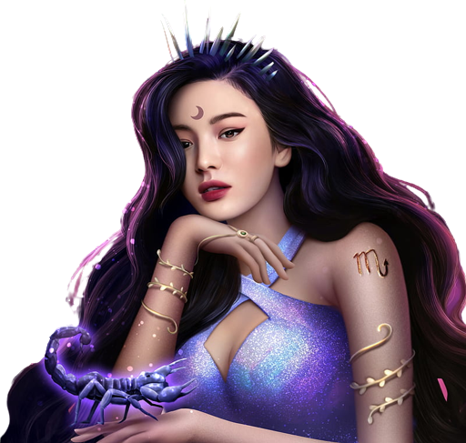

Hallo !!
Saya Jelita Rahmadilla
Mahasiswa MSIB Infinite Learning
"Saya Jelita, perempuan gila yang ingin bahagia".
Saya adalah seorang wanita Scorpio. Saya memiliki sifat yang kuat, berani, dan penuh gairah. Saya tidak mudah menyerah dalam menghadapi tantangan dan selalu berusaha mencapai tujuan saya. Saya juga sangat setia dan peduli terhadap orang-orang yang saya cintai. Saya tidak suka berpura-pura atau berbohong, saya selalu jujur dan terbuka. Saya memiliki intuisi yang tajam dan bisa membaca suasana hati orang lain dengan mudah.
Saya adalah seorang yang mandiri dan tidak bergantung pada orang lain. Saya bisa mengurus diri saya sendiri dan menyelesaikan masalah saya sendiri. Saya juga tidak suka campur tangan orang lain dalam urusan saya, kecuali jika saya meminta bantuan. Saya menghargai privasi dan kebebasan saya. Saya tidak suka diatur atau dikontrol oleh orang lain. Saya memiliki pendirian dan prinsip yang teguh.
Bagi saya, seperti yang dikatakan Nadin Amizah, 'Dengan segala kotorku, aku tetap pantas dicintaikan??' Kotor tersebut adalah bagian dari perjalanan hidup kita, yang membentuk siapa kita dan membantu kita tumbuh menjadi versi terbaik dari diri kita sendiri. Jadi, mari kita nikmati setiap momen, bersyukur atas kehidupan ini, dan selalu mencari kebahagiaan dalam kekacauan yang kadang-kadang mengelilingi kita."
Beberapa Skill yang saya kuasai :
HTML
CSS
Menjelaskan Perbedaan Dalam Istilah Sederhana
HTML adalah fondasi atau struktur dasar halaman web, mirip dengan wajah seseorang yang menjadi dasar penampilan. Dalam HTML, Anda mendefinisikan elemen-elemen seperti teks, gambar, tautan, dan elemen-elemen lain yang membentuk struktur halaman web, seperti "mata," "hidung," dan "mulut" pada wajah.
CSS digunakan untuk mengubah tampilan dan gaya elemen-elemen HTML, seperti makeup yang digunakan untuk mempercantik wajah. Dengan CSS, Anda mengatur warna, jenis huruf, margin, padding, dan elemen-elemen gaya lainnya untuk membuat halaman web terlihat menarik dan sesuai dengan desain yang diinginkan.
Seperti makeup yang digunakan bersamaan dengan wajah, HTML dan CSS bekerja sama untuk menciptakan tampilan akhir halaman web. HTML memberikan struktur dan konten, sedangkan CSS memberikan tampilan dan gaya, sehingga keduanya bekerja bersama untuk menciptakan pengalaman pengguna yang lengkap.
Makeup dapat diubah-ubah untuk menciptakan berbagai penampilan yang berbeda, dan hal yang sama berlaku untuk CSS dalam halaman web. Dengan CSS, Anda dapat dengan mudah mengubah tampilan halaman web tanpa harus mengubah struktur HTML, mirip dengan mengubah tampilan wajah tanpa mengubah dasarnya.